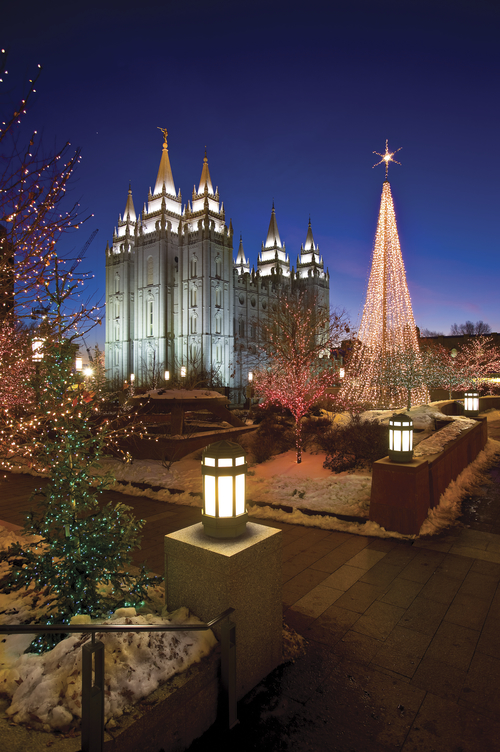

December 18, 2022

- Presiding: Member of Stake Presidency
- Conducting: Brother Palmer
- Opening Hymn: #203 Angels We Have Heard on High
- Opening Prayer: Sister Monica Jacobsen
- Ward Business
- Sacrament Hymn: #169 As Now We Take the Sacrament
- Administration of the Sacrament
- Youth Speaker: Kenneth Palmer
- Musical Number Hadley Snapp, O Little Town of Bethlehem
- Speaker: Sister Tara Atkins, Stake Primary President
- Musical Number: Sydnee ThackerO Come, O Come, Emmanuael
- Speaker: Elder Cohlton Bills
- Closing Hymn: #211 Far, Far Away on Jedea's Plains
- Closing Prayer: Cameron Beard